-
最新版
- バージョン
- 0.9.0-beta.5 (2026-10-20)
- ダウンロード
- Discord サーバーでお知らせします
簡単スライム化キット
β テスター資料
アバターに prefab を 1 つ置いて設定するだけで、メニューから「スライム化」できるキットです。この資料では、参加の要項と、設定画面の見方を画面のスクショで説明します。
このツールはベータ版です。
Claude (AI) を利用して開発しているため、AI に抵抗がある方には申し訳ありませんが、辞退をお願いします。
このキットについて
β の目的は、いろいろなアバターで設定だけで正しく動くかを確かめることです。
- スライム化すると、胸のコアから半透明のゼリーの体に変わり、垂れ・水たまり・コアが出ます
- メニューで色・光る・垂れ・水たまりを切り替えられます。「スライムの時は溶けて消える」にした服は、スライムになって溶け落ちます
- 元のアバターは書き換えません。アップロードの時にだけスライム化の処理が入ります (非破壊)
- PC 専用 (自作シェーダーのため Quest 非対応)
要項
下の条件と「分かっている制限」を確かめてから参加してください。
| 項目 | 条件 |
|---|---|
| 環境 | PC で VRChat を遊んでいる (デスクトップでも VR でも可) |
| Unity | VCC (または ALCOM) で作ったアバター用プロジェクト (Unity 2022.3) |
| 導入済みのもの | Modular Avatar (NDMF) と lilToon。アバターの衣装を MA で着せたことがある |
| アバター | BOOTH 等で販売されている人型のアバター。改変してよいか、各アバターの利用規約を先に確かめてください |
| 報告 | 「確認してほしいこと」の結果を 1 回以上送れる (書式は 10 章 からコピー) |
申請は要りません。サーバーに参加した時点でテストへの参加として受け付けます。
こちらの要項に同意できる方のみ、Discord サーバーに参加してください。
招待リンク: https://discord.gg/jafgn6tnS
既存のプロジェクトに影響を与えないように注意は払っておりますが、テスト用のプロジェクトを作成し、そちらで作業してください。
こちらのツールのテストの際の PC・Unity などのトラブルについて、一切の責任を負いかねます。
β5 で変わったこと
設定画面と、保存する設定の形を作り直しました。前の版の設定は引き継げません。次の順で入れ直してください。
- アバターに置いてある
EasySlime.prefabを消す - プロジェクトの
Assets/LeachiToyBox/EasySlimeフォルダを消す (顔マスクはEasySlimeDataに残っています。消さないでください。prefab を置き直すと、前に選んだ顔マスクが自動でつながります) - β5 の unitypackage をインポートし、1 章の手順で prefab を置き直す
| 変わったこと | 内容 |
|---|---|
| 設定画面の並び | 作業の順に並べ直しました。準備 (① 体と顔 → ② スライムにする所 → ③ 顔マスク → ④ 体の大きさに合わせる → ⑤ プレビュー) → 見た目 → 細かく調整 → 困った時 → 不具合の報告。1 つの値は 1 か所にだけ出ます |
| ② の一覧はオブジェクトごと | アバターの直下に置いた物 (衣装・髪) と、骨の下に付けた物 (手に持つ物など) を、オブジェクトごとに 1 つずつ畳みます。列は「名前 / スライムの時 / 扱い」の 3 つ。服をまとめて切り替えるボタンは、一覧を開かなくても出ます |
| どの行でもスライムにできる | しっぽ・耳・手足など、名前で見つからなかった物も、その行の「扱い」を「スライム」にすればスライムになります |
| 顔マスクは 3 択 | 「部品を選ぶ / 自分の画像 / スライムにしない」。前の「細かく調整 › 顔はスライムにしない」はここに入りました |
| ④ 体の大きさに合わせる | 前の ⓪ スキャンです。② で手足を「スライム」にしてから測れるように、後ろへ移しました。押さなくても導入できます |
| 見た目 | 前の「好み」です。垂れのオンオフと量、水たまりと足元の溜まり、コアの色・大きさ・位置、髪の崩れを、ここにまとめました |
| 崩れ方 | 前の「雰囲気」です。おすすめ / 控えめ / ドロドロ の 3 つで、細かく調整で値を変えると「(調整あり)」と出ます |
| 重さは 3 択 | 軽い / 標準 / 豪華。前の「豪華・軽量版」を「豪華」と呼び、前の「豪華」と「ポリゴン量 (細かい段階)」はなくしました |
| 困った時 | 症状ごとに、触る項目をまとめた段を作りました (服の下からスライムが漏れる / 目のまわりに濃い線が出る / 外から顔が塗りつぶされる) |
| なくした物 | 顔も揺らす (試験中)、糸、メニューの色の初期値 (着た時の色は「スライムの色」で選びます)、服ごとの垂れの長さと太さ (服に合わせて自動)、Tools メニューの「導入」ウィンドウ (入れるのは右クリック・Tools › Easy Slime › アバターに入れる・prefab のどれでも。1 章) |
| 分かれた体・しっぽ・耳 | 体が何枚のメッシュに分かれていても、1 枚の体と同じ質感・動きになります (#6)。しっぽ・耳・角・翼も体と同じ作りです。泡は体の表面に付いて一緒に動きます |
| 光のにじみ | ブルームのあるワールドで、つやとコアの光が胸の中に広がらないようにしました (#27) |
導入の手順
テスト用のプロジェクトを作る
普段使っているプロジェクトには入れないでください。アバター用プロジェクトを丸ごと複製しても構いません。
複製したプロジェクトに unitypackage をインポートする
Assets/LeachiToyBox/EasySlimeができます。テスト用にアバターを複製し、blueprint ID を外す
普段使いのアバターとは別の ID で、新しくアップロードします。
アバターにキットを入れる
次のどれかで、アバターのルートの直下に
EasySlimeが置かれます。シーンのアバターの見た目は変わりません。設定用の部品 (Easy Slime Avatar) が置かれるだけです。- ヒエラルキーでアバターを右クリック › Easy Slime › このアバターに入れる
- 上のメニューの Tools › Easy Slime › アバターに入れる で、アバターを選んで「このアバターに入れる」
Assets/LeachiToyBox/EasySlime/EasySlime.prefabを、アバターのルートの子にドラッグする
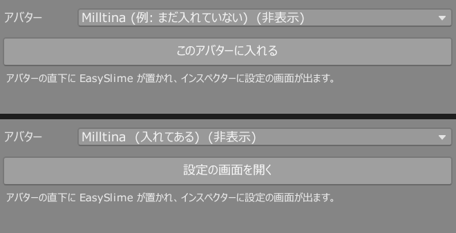
Tools › Easy Slime › アバターに入れる。入れてあるアバターは「(入れてある)」と出て、ボタンで設定の画面を開けます EasySlime のインスペクターで設定する
「準備」を上から ✔ にして、必要なら「見た目」を選びます。④ は押さなくても構いません。画面の見方は 2 章から。
SDK からプライベートでアップロードする
スライム化の処理はアップロードの時に、ビルド用の複製にだけかかります。
- 初回のビルドはシェーダーの準備で数分〜10 分ほどかかることがあります。進み具合のバーが行ったり来たりするのは、シェーダーを 1 つずつ準備している表示で、異常ではありません
- 同じプロジェクトなら 2 回目からは速くなります。キットを更新した後の最初の 1 回は、また長くなります。2 回目以降も 10 分近くかかる時は教えてください
ゲーム内で Expression メニューの「スライム」を開いて試す
やめる時はアバターの直下の EasySlime を消すだけです。
設定画面の全体
prefab を選ぶと、インスペクターに Easy Slime Avatar が出ます。上から 準備・見た目・細かく調整・困った時・不具合の報告 の 5 段です。ふつうは準備と見た目だけで足ります。
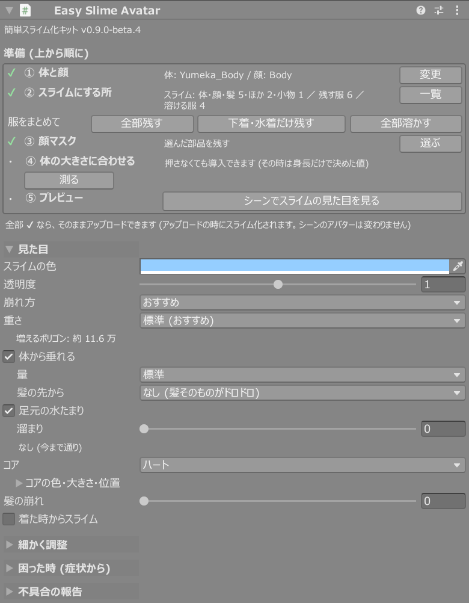
①〜⑤ を上から順に ✔ にするチェックリスト。✔ は緑、要確認は黄色の「!」、足りない時は赤の「✖」、やらなくてもよい手順は「・」。①〜③ が ✔ ならそのままアップロードできます。問題がある時は、準備の上に注意の箱が出ます。
色・透明度・崩れ方・重さ・垂れ・足元・コア。全員が触る所で、いつも開いています。既定のままでも動きます。
ふつうは畳んだままで大丈夫です。細かく調整は値を 1 つずつ変える所、困った時は症状から触る項目を探す所です。項目にマウスを乗せると説明が出ます。
いちばん下の「不具合の報告」には、報告に付ける構成の JSON を書き出すボタンと、この説明書の 10 章 回答と不具合の報告 (報告の書式をコピーできる所) を開くボタンがあります。
準備 ①〜⑤
各行の右のボタンを押すと、その下に中身が開きます。もう一度押す (「閉じる」) と閉じます。
① 体と顔
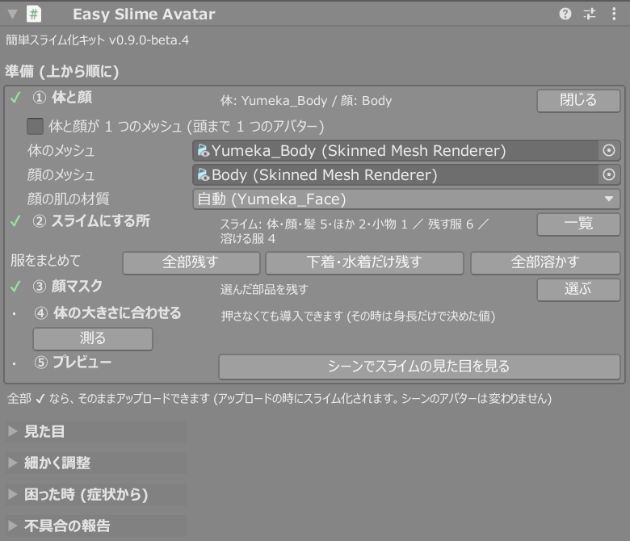
| 項目 | 説明 |
|---|---|
| 体のメッシュ / 顔のメッシュ | 自動で入ります。違っていたら選び直してください |
| 顔の肌の材質 | 顔のメッシュの材質のうち、顔の肌が塗られているもの。顔マスクはこの材質で作り、ほかの材質 (赤面・涙などの重ね) は元の絵のまま残します。顔がスライムにならない時はここを確かめてください |
| 体と顔が 1 つのメッシュ | 体と顔が分かれていないアバター用。オンにすると「顔の材質」を選ぶ欄が出て、その材質だけを顔、ほかを体として扱います |
② スライムにする所
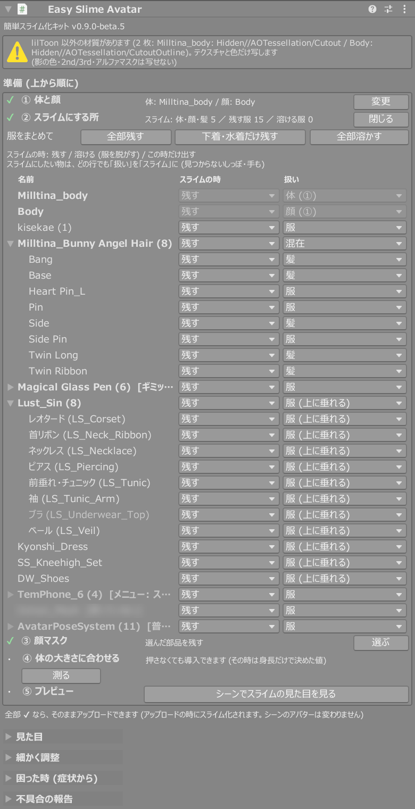
アバターの中のメッシュを、スライムにするか・服を残すか溶かすかを決める所です。名前から自動で振り分けてあります。違う物と、溶かしたい服だけ直してください。② の行の要約 (「スライム: 体・顔・髪 5 ／ 残す服 15 ／ 溶ける服 0」) で数を確かめられます。
服をまとめて
② の行のすぐ下にいつも出ています。服の行だけを一度に切り替えるボタンです (ギミックと、どのメニューからも出せない物は変わりません)。押した後も、一覧で 1 つずつ直せます。
| ボタン | スライムになった時 |
|---|---|
| 全部残す | 服はそのまま。服の下の体だけスライムになります |
| 下着・水着だけ残す | 名前に bra / pant / swim / 下着 / 水着 などが入る服だけ残り、ほかの服は溶けて消えます |
| 全部溶かす | 服が全部溶けて消えます |
一覧の分け方
一覧はオブジェクトごとに分かれています。アバターの直下に置いた物 (衣装・髪のプレハブ) と、骨の下に付けた物 (手に持つスマホ・腰に付けた物など) が、それぞれ 1 つの畳みになります。中が 1 枚だけの物は畳まずに 1 行で出ます。畳みの見出しの行で選ぶと、その中が全部まとめて変わります。中の値がそろっていない時は「混在」と出ます。開閉はアバターごとに覚えます。
- 並びは、一番上に ① で選んだ体と顔、次に普段見えている物、最後に普段は非表示の物 (薄い字) です
- 名前の後ろの印: [メニュー: …] メニューで出し入れする物 / [普段は非表示] 普段は見えないがメニューなどで出せる物 / [使っていない] どのメニューからも出せない物 / [ギミック] 独自のメニューを持つ物・手に持つ物 (服の数に入れず、「服をまとめて」でも変わりません)
列の意味
| 列 | 選べるもの | 使いどころ |
|---|---|---|
| スライムの時 | 残す / 溶ける / この時だけ出す | スライム化で脱がしたい服は「溶ける」。溶け落ちる演出が付き、その服に合わせて縮めていた体は元に戻ります |
| 扱い | スライム / 髪 / 小物 / 服 / 服 (上に垂れる) | スライムにしたい物は、どの行でも「スライム」に (肌・耳・しっぽ・角・翼・別メッシュの手足)。体と同じ崩れ方にするか部品の崩れ方にするかは、アップロードの時に骨の付き方で自動で決まります。「服」の下の体はスライムにならず、スライムは服の縁からあふれます。「服 (上に垂れる)」なら服の上にも液が垂れます (長さと太さは服に合わせて自動)。「溶ける」の行には扱いを聞きません |
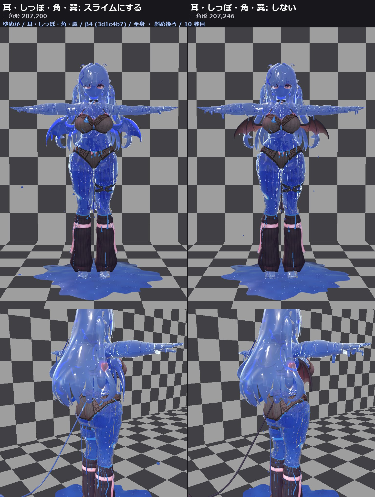
手や足が別メッシュのアバター
手・足・肉球などが体と別のメッシュになっているアバター (おまねこなど) は、そのメッシュが最初は「服」になっていることがあります。扱いを「スライム」にしてください。体の骨に乗っている肌なので、アップロードの時に自動で体と同じ崩れ方になり、指の形が残って体との継ぎ目がそろいます。その後で ④ の「測る」を押すと、手の指が測れて、手の崩れ方も手の大きさに合わせられます。
③ 顔マスク
顔のどこを元の絵のまま残すかを選びます。くわしくは 4 章。
④ 体の大きさに合わせる (押さなくてもよい)
「測る」を押すと、アバターの寸法 (身長・手・指・腕・脚・胴・首・頭の太さ、しっぽなどのパーツ) を測り、その寸法に合わせた値を設定にそのまま書き込みます。押さなければ何も変わらず、身長だけで決めた値で導入・アップロードできます。
| 書き込む値 | 決め方 |
|---|---|
| 部位ごとの膨らむ上限・崩れの強さ | 手・腕・胴・胸・脚・足・首の太さから (「細かく調整 › 部位ごと」の値) |
| しっぽ・耳・角・翼の膨らむ上限 | そのパーツの太さから。細いパーツが膨らみすぎないように |
| 細くなりすぎない値・垂れと筋の太さ・服の上の垂れの太さ | 指・体・服の下の部位の太さから |
| 顔の厚み・頭の中の判定・コアの大きさ | 頭・胴の大きさから |
- 書き換えた値は、右の「測った値」を押すと「前 → 後」で確かめられます。気に入らなければ Ctrl+Z 1 回で、測った値も書き換えた値も全部戻ります
- 自分で変えた値は、その比のまま寸法に合わせて直します。2 回押しても 2 重には掛かりません
- 体・顔や、スライムにするメッシュを後から変えると「!」が付きます。もう一度「測り直す」を押してください
- 手・足が別メッシュのアバターは、② でそのメッシュを「スライム」にしてから測ってください (服のままだと指が測れません)
⑤ プレビュー
「シーンでスライムの見た目を見る」を押すと、シーンビューでスライムの見た目になります。もう一度押すと元に戻ります。プレビューには垂れ・水たまり・服の上の垂れは出ません (アップロード・Play では入ります)。
顔マスクの選び方
顔マスクは、目・まつげ・眉・口など元の絵のまま残す部品を決めるものです。どのアバターも最初に自分で選びます。選ぶまでは、顔は元の絵のまま (スライムになりません)。③ の「顔」の欄で、次の 3 つから選びます。
| 顔 | 使い方 |
|---|---|
| 部品を選ぶ | 選ぶ画面で、残す部品をクリックして選びます (下の手順) |
| 自分の画像 | 自分で作った白黒の画像を入れます (顔テクスチャと同じ並び。白 = 元の絵のまま残す、黒 = スライム) |
| スライムにしない | 顔は元の絵のまま、首から下だけスライムになります |
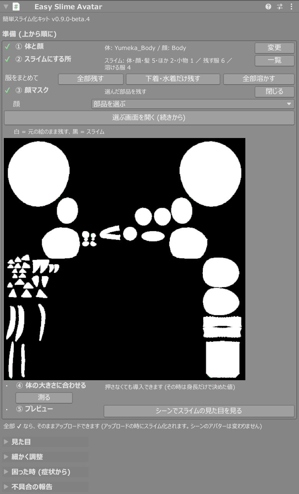
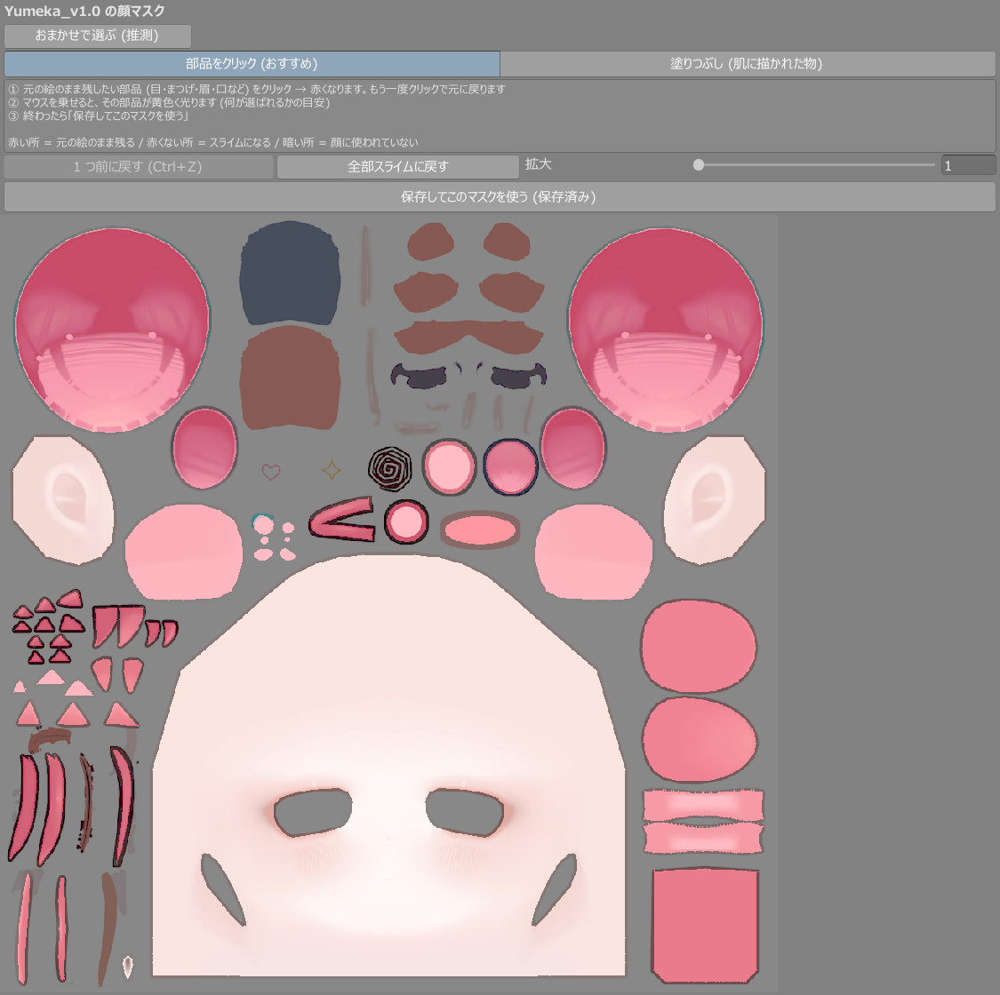
「選ぶ画面を開く」を押す
初めて開いた時は「おまかせ」(推測) で選ばれた状態から始まります。
部品をクリックして直す
クリックで赤くなり、もう一度で戻ります。赤 = 元の絵のまま残る、赤くない所 = スライムになる、暗い所は顔に使われていない所です。マウスを乗せた部品は黄色く光ります。
- 島になっていないチーク・線は、上の「塗りつぶし」に切り替えて塗ります
- 間違えたら「1 つ前に戻す (Ctrl+Z)」、やり直すなら「おまかせで選ぶ」
「保存してこのマスクを使う」
Assets/LeachiToyBox/EasySlimeData/FaceMasks/<アバター名>/FacePickMask.pngに保存されます (キットのフォルダの外なので、キットを入れ直しても残ります)。次に開くと続きから直せます。
- 選ぶ画面の、開いた直後 (おまかせのまま) のスクショ
- おまかせからどこを直したかを一言で (例: 「眉を残すに変えた」「頬の赤みを消すに変えた」)
- ゲーム内でスライムにした時の顔のスクショ (正面と斜め)
おまかせの外れ方を集めて、推測を直すのに使います。顔のテクスチャそのものは送らなくて大丈夫です。
見た目
見た目の方向を決める所です。いつも開いています。
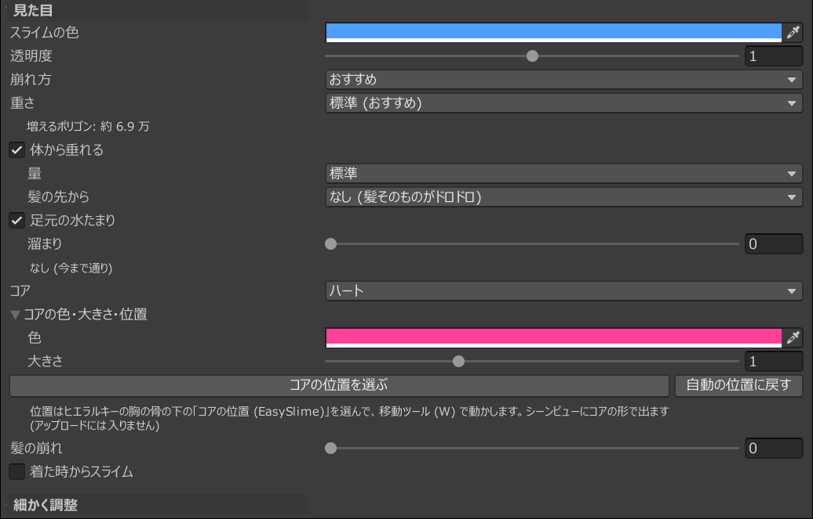
| 項目 | 既定 | 説明 |
|---|---|---|
| スライムの色 | 水色 | スライムになった時の色。ゲーム内メニューの「色」でその場で変えることもできます |
| 透明度 | 1 | スライムの奥がどれだけ透けて見えるか (0.2〜1.8)。右へ行くほど透き通り、左へ行くほど濃く奥が見えなくなります。体・垂れ・水たまりがそろって変わります。アップロードの時の値で、ゲーム内では変えられません |
| 崩れ方 | おすすめ | 崩れ方・垂れの量・泡などをまとめて決めます。おすすめ / 控えめ (形を保つ) / ドロドロ (よく崩れる・垂れが多い)。細かく調整で値を変えると「(調整あり)」と出ます。選び直すと値も選んだ物に戻ります |
| 重さ | 標準 | 垂れの本数と細かさ。軽い / 標準 / 豪華。下に「増えるポリゴン」の目安が出ます (溶ける服が多いほど増えます) |
| 体から垂れる / 量 | オン / 標準 | 体の下向きの所から液が垂れて床まで落ちる。量は 少なめ / 標準 / 多め / とても多い (部位ごとに変えた時は「部位ごと」と出ます)。ゲーム内メニューの「垂れ」は、作った垂れを出し入れします |
| 髪の先から | なし | なし = 髪そのものが溶けたように見える / あり = 毛先が膨らんで、ちぎれた雫が床へ落ちる |
| 足元の水たまり | オン | スライムになると足元に水たまりが広がる。ゲーム内メニューでもオンオフできます |
| 溜まり | 0 | 止まって水たまりが広がると、足に接する所の水たまりが盛り上がり、足首に液の層が付きます (0〜1.2)。0 = なし、0.33 / 0.67 / 1 がおおよそ 少 / 中 / 多。0 より大きいと、水たまりの三角形が約 7,100 増えます。アップロードの時の値で、メニューには出ません |
| コア | ハート | 体の中に浮かぶ芯。なし / ハート / 球 / 水晶。「コアの色・大きさ・位置」を開くと、色・大きさ・自動で置いた位置からのずれ (上へ / お腹側へ / アバターの左へ、cm) を変えられます。開いている間は、シーンビューでコアの印を掴んで動かせます |
| 髪の崩れ | 0 | 0 = 髪の形はそのままで質感だけスライム。上げると髪も垂れて崩れます (前髪の長いアバターは目が隠れることがあります) |
| 着た時からスライム | オフ | アバターを着た時からスライム。メニューで肌に戻せます |
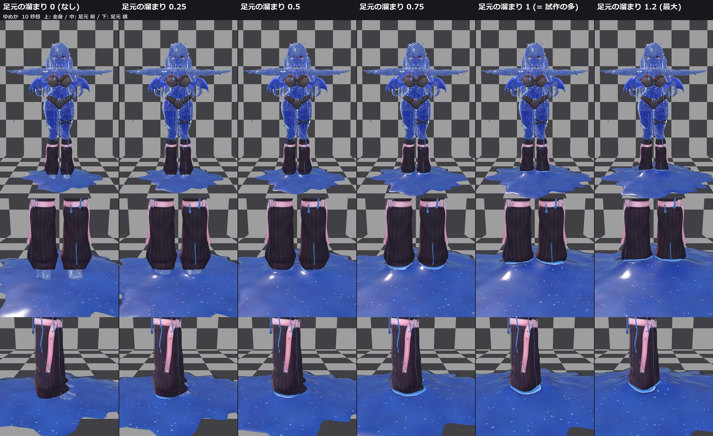
足元の溜まりで、まだできていないこと: 座っている時や、FBT で足が床から浮いている時も、真下の水たまりに這い上がりが出ます。メニューで水たまりを消しても、足首の層は残ります。
次の見本は、ゆめかでその項目だけを変えて焼いた物です (ほかは既定のまま)。どれもスライムにしてから 10 秒目 (スライムになりきった状態) の絵で、上は全身、下は上半身です。
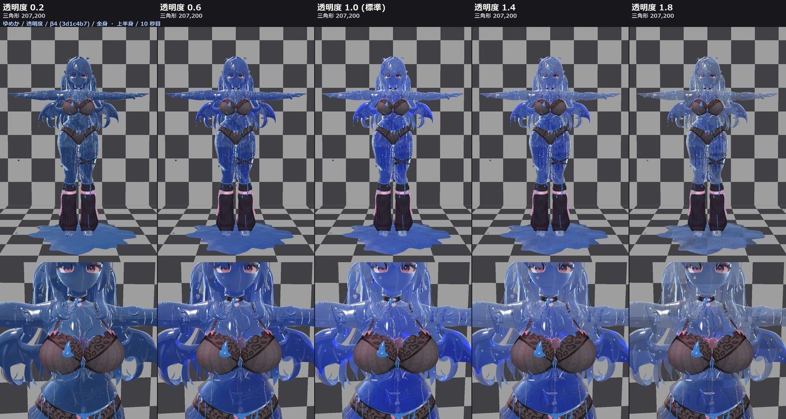
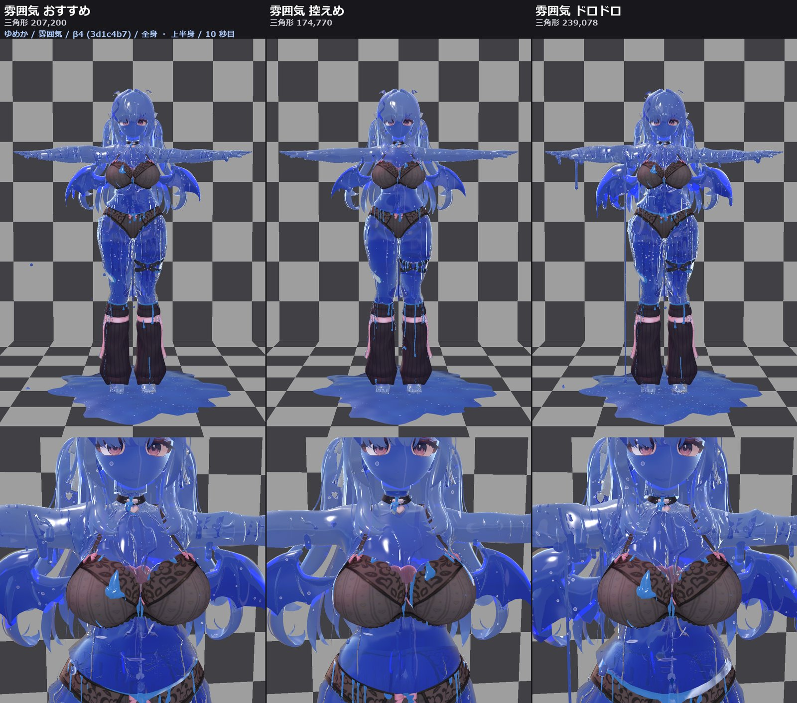
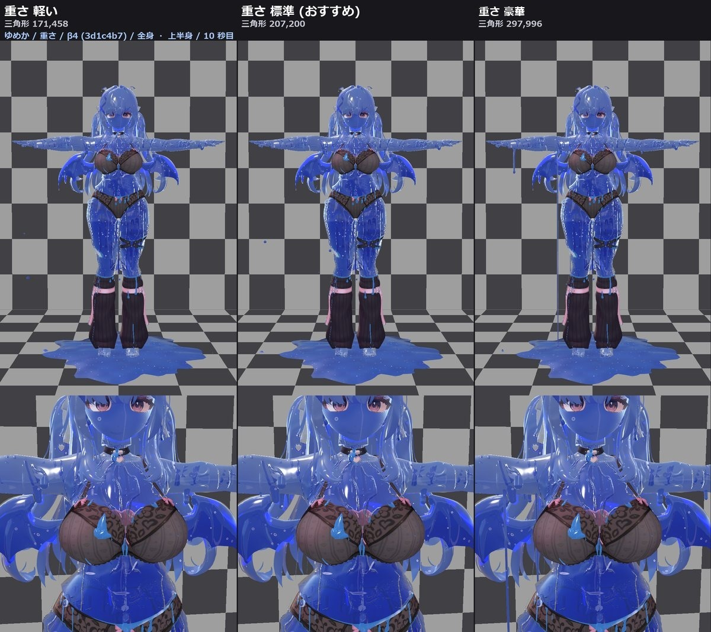
細かく調整
7 つのまとまりに分かれています。ふつうは触らなくて大丈夫です。どれも既定のままで動きます。気になる所だけ変えてください。体の崩れ方・垂れ・泡の値を変えると、見た目の「崩れ方」に「(調整あり)」と出ます。
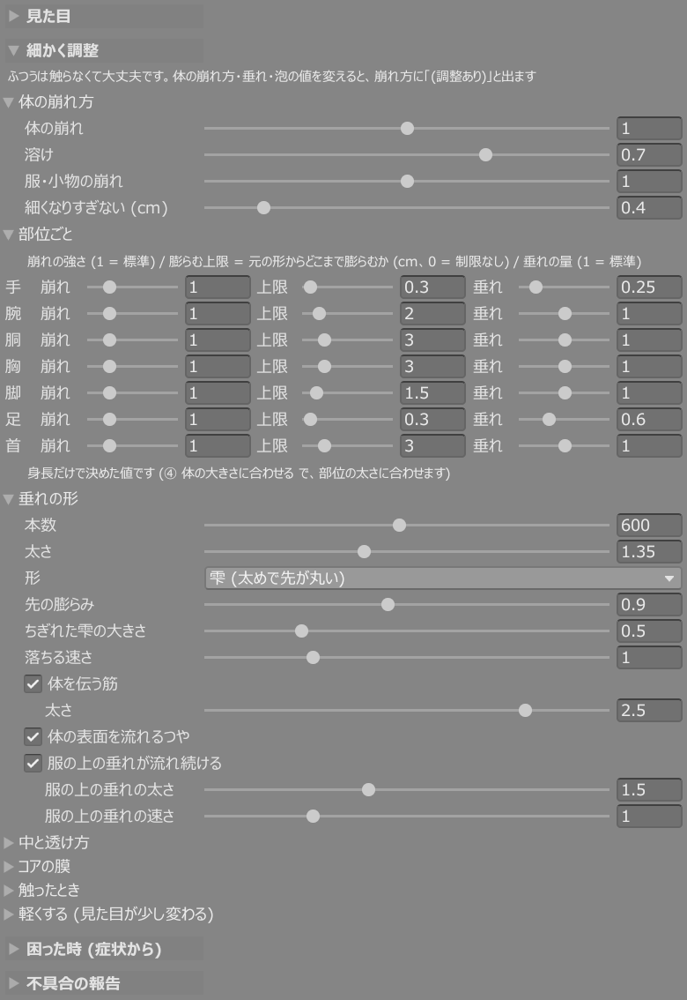
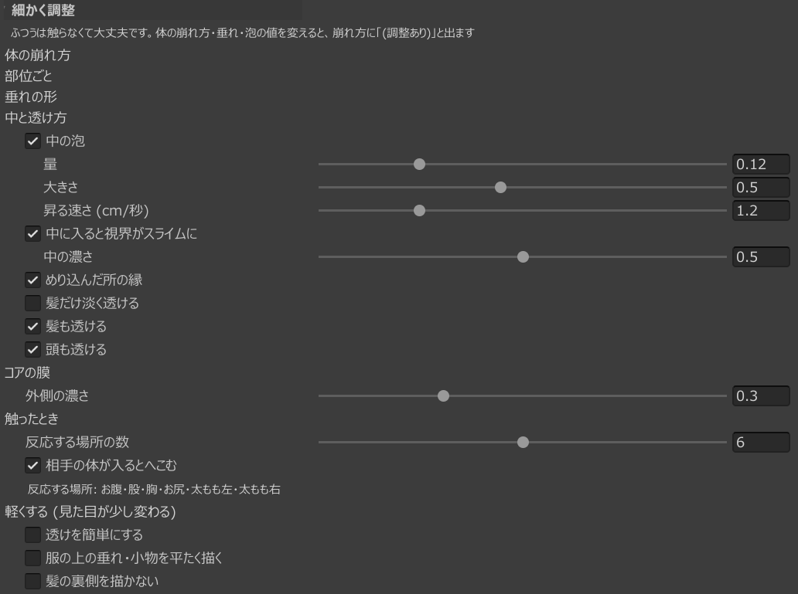
体の崩れ方
| 項目 | 既定 | 説明 |
|---|---|---|
| 体の崩れ | 1 | 体がどれだけ形を崩して、だれたり膨らんだりするか。0 = 形そのまま / 1 = 標準 / 2 = もっと崩れる |
| 溶け | 0.7 | 体の表面がどれだけ溶けて下へ垂れるか。0 = 垂れない / 1 = たくさん |
| 服・小物の崩れ | 1 | ② でスライムにした服・小物の崩れ方。小物はさらに控えめ |
| 細くなりすぎない (cm) | 0.4 | 崩れで体が元より細くなる量の上限。腕・指が棒のように細くなる時は小さく |
部位ごと
手・腕・胴・胸・脚・足・首ごとに、崩れ (崩れの強さ、1 = 標準)・上限 (元の形からどこまで膨らむか cm、0 = 制限なし)・垂れ (落ちる垂れの量、1 = 標準)。④ で測った時は、体の大きさに合わせた値が入ります。
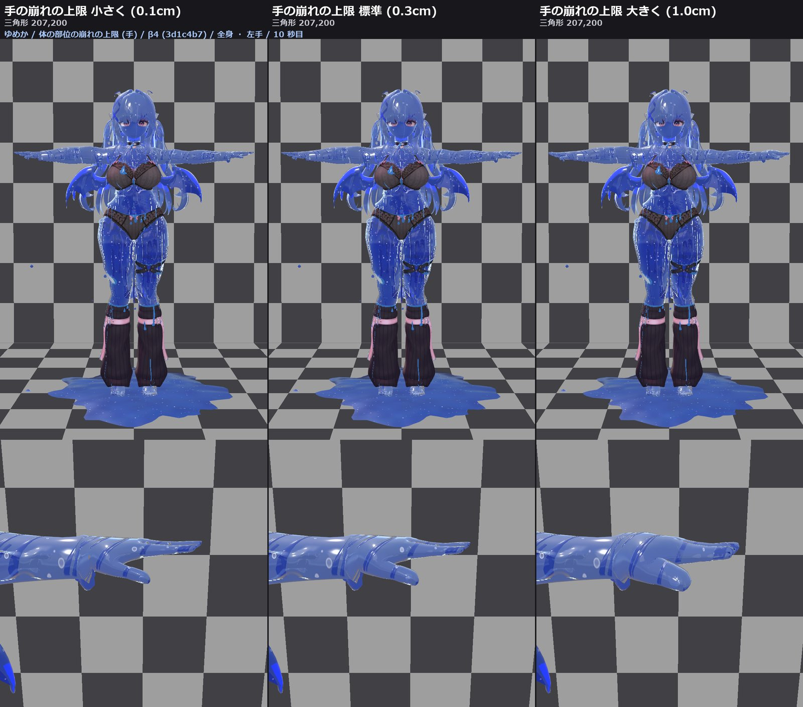
垂れの形
| 項目 | 既定 | 説明 |
|---|---|---|
| 本数 / 太さ | 600 / 1.35 | 体から落ちる垂れの本数 (多いほどポリゴンも増える) と太さ |
| 形 | 雫 | 細い筋 / 雫 (太めで先が丸い)。選ぶと先の膨らみ・太さも合わせて変わります |
| 先の膨らみ / ちぎれた雫の大きさ / 落ちる速さ | 0.9 / 0.5 / 1 | 垂れの先の丸さ、先からちぎれて落ちる雫の大きさ、垂れる速さ |
| 体を伝う筋 / 太さ | オン / 2.5 | 体の表面を、液の筋がゆっくり流れ落ち続ける |
| 体の表面を流れるつや | オン | 体の表面のつやがゆっくり下へ流れて、ドロドロ感が出る |
| 服の上の垂れが流れ続ける / 太さ / 速さ | オン / 1.5 / 1 | 「服 (上に垂れる)」の服の上の垂れ。オン = 流れ落ち続ける / オフ = 伸びたら止まる |
中と透け方
| 項目 | 既定 | 説明 |
|---|---|---|
| 中の泡 / 量 / 大きさ / 昇る速さ | オン / 0.12 / 0.5 / 1.2 | スライムの中に小さな泡が浮かんで、ゆっくり昇る。泡は体の表面に付いて一緒に動きます |
| 中に入ると視界がスライムに / 中の濃さ | オン / 0.5 | 見ている人のカメラが体に近づくと濃くなり、体の中に入ると視界がスライムで埋まる。0 = 外がよく見える / 1 = ほとんど外が見えず、締め付けて脈打つ |
| めり込んだ所の縁 | オン | ほかの人の体や床がスライムに沈んだ境目に、濃い液の縁とつやを出す。影の出るワールドだけで見えます |
| 髪も透ける | オン | 髪越しに後ろの景色やほかの人が見える (自分の頭は見えない)。オフ = 髪は一様な色 |
| 頭も透ける | オン | オフ = 頭の向こうが透けず、首から顎へ少しずつ透けなくなる |
コアの膜・触ったとき・軽くする
| 項目 | 既定 | 説明 |
|---|---|---|
| コアの膜 › 外側の濃さ | 0.3 | コアのまわりの薄い膜の濃さ。0 = 芯だけ / 1 = 外側まで濃い (コアが「なし」の時は出ません) |
| 触ったとき › 反応する場所の数 | 6 | 手・指・足・頭が触れると、へこんで盛り上がり波紋が広がる場所の数 (お腹・股・胸・お尻・太もも左右)。多いほど VRChat の Contacts を使います |
| 触ったとき › 相手の体が入るとへこむ | オン | お腹・胸・お尻に相手の体が入ると、その分へこむ (Contacts +3) |
| 軽くする › 透けを簡単にする | オフ | 髪・垂れ・水たまりの透け方を 1 回の計算にまとめて軽くする。髪・垂れ・水たまり越しには後ろの景色だけが見え、ほかの人のスライムは見えなくなる (体越しには見える) |
| 軽くする › 服の上の垂れ・小物を平たく描く | オフ | 厚みを測らずに描く回数を減らす。少し平たく見える |
| 軽くする › 髪の裏側を描かない | オフ | 髪の裏面を描かずに軽くする。板の髪を裏から見ると消える |
困った時
設定画面の「困った時 (症状から)」には、症状ごとに触る項目が並んでいます。
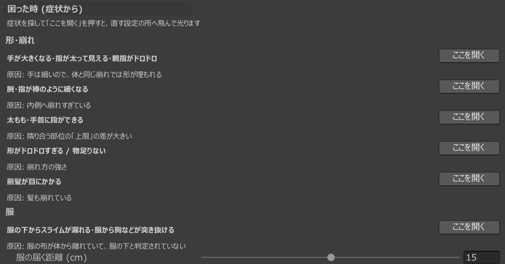
ほかの症状は、次の表から探してください。
| こうなったら | ここを変える |
|---|---|
| 服の下からスライムが漏れる | 困った時の「服の届く距離」を上げる |
| 顔がスライムにならない | ③ の顔マスクを選んで保存したか確かめる。① の「顔の肌の材質」が合っているか |
| 目・口までスライムになる | 選ぶ画面で、その部品をクリックして赤にする |
| 目のまわりに枠のような濃い線が出る | 困った時の「顔の奥行きを測る」をオフ、または「顔の厚みの下限」を上げる |
| 外から見ているのに顔 (目・口) が塗りつぶされる | 困った時の「頭の中を液で隠す」をオフ |
| 前髪が目にかかる | 見た目の「髪の崩れ」を下げる (0 なら髪の形はそのまま) |
| 腕・指が棒のように細くなる | 細かく調整 › 体の崩れ方の「細くなりすぎない」を小さくする |
| 手の形が崩れすぎて分からない (手が大きいアバター) | ④ の「測る」を押す (手の大きさに合わせた値が入ります)。または 細かく調整 › 部位ごと で手の「上限」を下げる |
| しっぽ・耳・手足がスライムにならない | ② の一覧で、その行の扱いを「スライム」にする (名前で見つからなかった物も、どの行でもスライムにできます) |
| しっぽ・耳・角・翼をスライムにしたくない | ② の一覧で、その行の扱いを「服」にする |
| もっと透けてほしい / 濃くしたい | 見た目の「透明度」 |
| 測った後の見た目が気に入らない | 押した直後なら Ctrl+Z で全部戻ります。後からなら 細かく調整 › 部位ごと などで直す |
| 服を溶かした後も体が縮んだまま・欠けたまま | 不具合として、構成の JSON を付けて報告してください (縮めているキーの名前が分かると直せます) |
| 初めてのアップロードがなかなか終わらない | 初回はシェーダーの準備で数分〜10 分かかることがあります。待ってください (2 回目からは速くなります) |
| 中に入った時に見えすぎる / 見えなさすぎる | 細かく調整 › 中と透け方の「中の濃さ」 |
| 頭の中の物 (首の上端・表情の板など) が見える | 細かく調整 › 中と透け方の「頭も透ける」をオフ |
| 重い | 見た目の「重さ」を「軽い」に。さらに 細かく調整 › 軽くする の 3 つ |
| 形がドロドロすぎる / 物足りない | 見た目の「崩れ方」を控えめ・ドロドロに |
直らない時や、表にない症状は、10 章の不具合の書式をコピーして Discord サーバーで送ってください。
ゲーム内
| メニュー「スライム」 | 種類 | 内容 |
|---|---|---|
| スライム化 | トグル | 人間 ⇄ スライム |
| 色 | ラジアル | 色相を変える。最初は設定の「スライムの色」 |
| 光る | ラジアル | 内側から光る。暗いワールド向け |
| 垂れ | トグル | 体・髪から落ちる垂れと、服の上の垂れ (既定オン)。体の表面を流れる筋は残ります |
| 水たまり | トグル | 立ち止まると床に水たまりが広がる (既定オン)。ジャンプ・落下の間は床に残り、着地すると足元に戻ります |
- 手・指・足・頭が触れるとへこんで波紋が出ます。相手の体が入るともっと深くへこみます
- 視点がめり込むとスライムの中の景色になります
- オフにすると 2 秒ほどで元の見た目に戻ります
- 増えるもの: 同期パラメータ 19 bit、Contacts 9 個 (既定の設定で)
確認してほしいこと
今回のテストで確かめたいのは、次の 6 つです。全部でなくて構いません。試せた所だけ報告してください。
- 素体 (服なし・購入時の状態) に prefab を入れて、設定を変えずにエラーなくアップロードできる
- ゲーム内でスライム化して、解除すると元の見た目に戻る
- 着ている間は体の一部を縮めたり (Shrink)、隠したりしているアバターで、服を「溶けて消える」にした時、中の体が欠けたり細くなったりしない
- 服の切り替えのメニューが今までどおり動く
- 明るいワールド・暗いワールドそれぞれでの見え方 (ワールド名も)
- ミラー・カメラでの見え方
- 良かった所・物足りない所
- マスク選択の「おまかせ」が、自分のアバターの顔にどれくらい合っていたか
- クリックで部品を 1 つずつ選ぶ操作は使いやすかったか
- AAO・TexTransTool・FaceEmo など、入れているツールと一緒に使える
- 表情・衣装の切り替えなど、入れているギミックが今までどおり動く
- 設定画面の並び (準備 ①〜⑤ → 見た目 → 細かく調整) が分かりやすくなったか
- ② の一覧がオブジェクトごとの分け方で、自分のアバターで探しやすいか
- 体・手足・しっぽなどが別メッシュの時、つなぎ目が目立たなくなったか
- ④ 体の大きさに合わせる を使った時、手・しっぽなどの崩れ方・膨れ方が良くなったか (使わなくても構いません)
- 止まった時の泡・カメラや鏡での写り方 (前の版で気になった方は特に)
回答と不具合の報告
回答の書式
下の書式をコピーして Discord サーバーで送ってください。一言でも構いません。
【アバター】 【入れているツール】(AAO / TexTransTool / FaceEmo など) 【1. おすすめ設定のまま】アップロードまで通ったか、解除で元に戻ったか 【2. 衣装の仕組み】服を溶かした時に体が欠けたり細くなったりしなかったか (衣装名も) 【3. 質感】良かった所・物足りない所 (ワールド名も) 【4. 顔マスク】おまかせはどれくらい合っていたか、どこを直したか、クリックで選ぶ操作は使いやすかったか 【5. ほかのツール】一緒に入れて問題なかったか 【6. β5 で変わった所】設定画面の並び・② のオブジェクトごとの一覧・別メッシュのつなぎ目・④ 体の大きさに合わせる・泡・カメラや鏡 【6. 出来ると嬉しいこと・分かりづらかった設定】 【7. 不具合】(別に送ったものは「送信済み」で OK)
不具合の報告
気付いた時点で 1 件ずつ送ってください。スクショや短い動画があると原因を見つけやすくなります。「こうだったらいいのに」という要望や、動いたという報告だけでも助かります。
【アバター】 【衣装・髪】(その不具合に関係するもの) 【入れているツール】MA / AAO / TexTransTool / FaceEmo など (分かれば版も) 【どこで起きたか】導入中 / アップロード中 / ゲーム内 (ワールド名) 【何が起きたか】 【どうなるはずだったか】 【再現の手順】 【スクショ・動画】(設定画面のスクショもあると助かります) 【コンソールのエラー】(あれば、赤い行をコピー) 【構成の JSON】(添付)
構成の JSON は、キットの設定画面のいちばん下「不具合の報告」にある「不具合報告用の情報を書き出す (JSON)」で作れます。アバターの構成・キットの設定・キットの版・最近のエラーが 1 つのファイルになります (テクスチャやメッシュの中身、PC のユーザー名は入りません)。
分かっている制限
次の点は把握しています。報告は不要ですが、「ここが特に気になる」という声は歓迎です。
| 制限 | 内容 |
|---|---|
| PC 専用 | Quest・スマホからはフォールバックの見た目になります |
| ゲーム内のシェイプキー | 胸の大きさなどをゲーム内で変える機能には対応していません。垂れ・服の上の垂れはアップロードした時の体型で作られます |
| T ポーズ前提 | アバターの初期姿勢が T ポーズでないと、垂れの位置がずれることがあります |
| lilToon 前提 | 元の材質から写す値は lilToon のもの。ほかのシェーダーはテクスチャと色だけです |
| 体と顔が 1 つのメッシュ | 対応しましたが、実際の一体型アバターではまだ確かめていません。お持ちの方はぜひ |
| 大きい服の垂れ | T シャツなどは、垂れが肌に接した縁からしか湧かず、本数が少なめです (調整中) |
| 暗いワールド | 垂れの先・縁が明るく浮いて見えることがあります |
| 頭の中 | 表面のすぐ内側では、表情の板がうっすら見えることがあります |
| 初回のビルドが長い | スライムのシェーダーの準備で、最初のアップロード (ビルド) に数分〜10 分かかることがあります。同じプロジェクトなら 2 回目以降は速くなります。キットを更新した後の最初の 1 回はまた長くなります (#18、短くする方法を検討中) |
| 明るさを変えるツール | スライムの材質は lilToon ではないため、LightLimitChanger などの明るさの制限はスライムの部分には効きません |
| 水たまりと段差 | 段差の外へ出ると、水たまりが段の高さで浮いて見えることがあります。床に落ちた雫はジャンプで一緒に上がります |
お願いとお約束
お願い
- 必ずテスト用のプロジェクトで作業してください
- 配布物の再配布・譲渡はしないでください
- アップロードはプライベートだけにしてください (パブリックアバターにしない)
- β 版は予告なく仕様が変わることがあります。更新版をお渡ししたら、その unitypackage をそのままインポートしてください (フォルダを消す必要はありません)
お約束
- お礼として、製品版を無償でお渡しします (ご希望の方はクレジットにお名前を載せます)。また、今後もし他のツールなどを BOOTH で販売することがあれば、お好きな商品を 1 つギフトします (今のところ販売の予定は未定です)
- いただいた報告には必ず返事をし、直したものは更新版でお知らせします
- いただいた情報 (アバター名・スクショなど) は、不具合の修正と動作確認済みの一覧にだけ使います